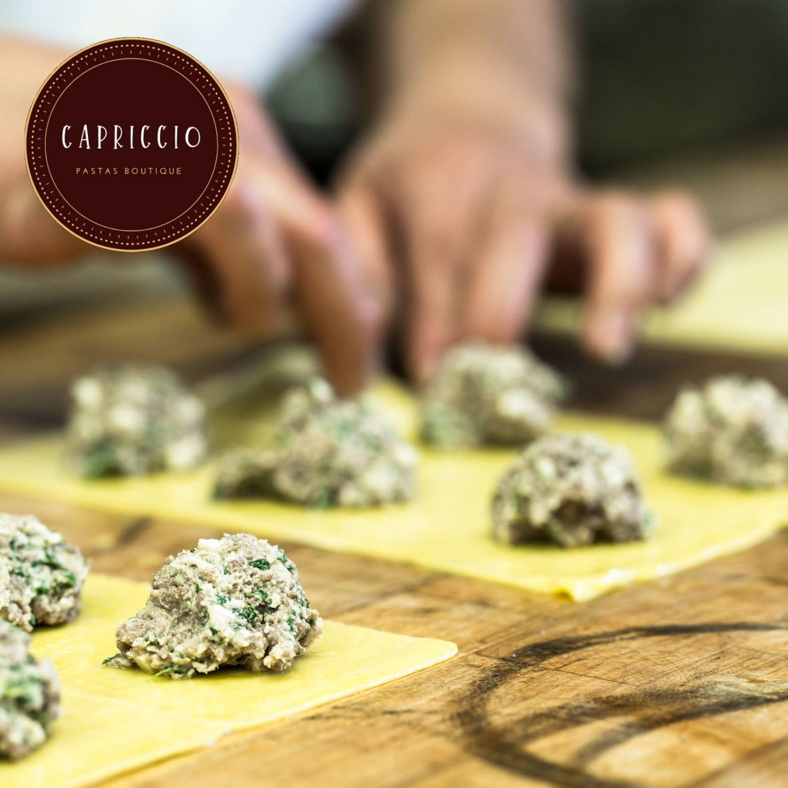
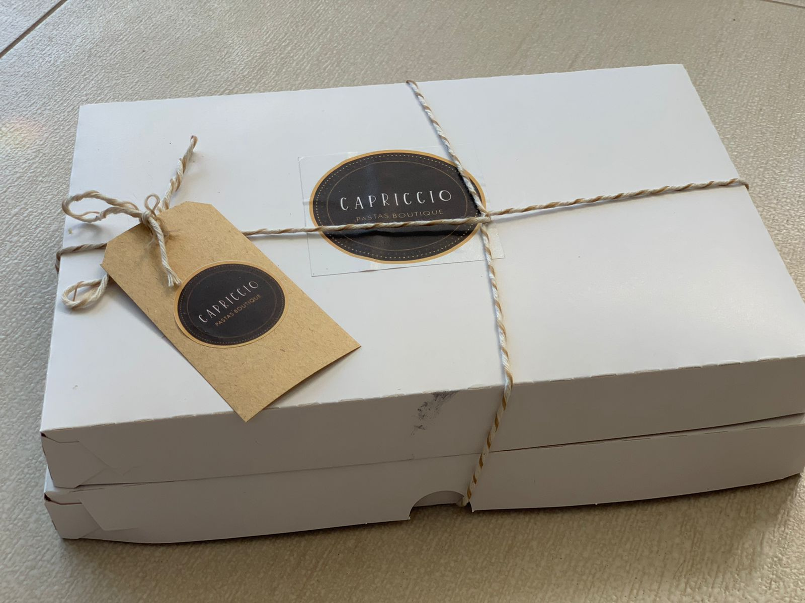
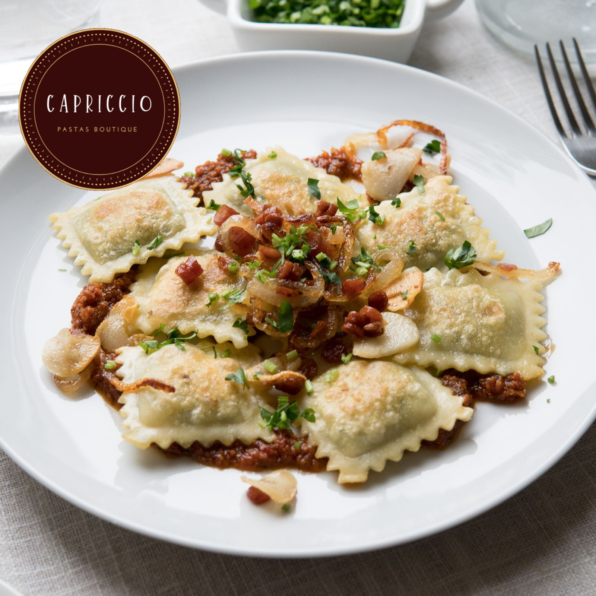
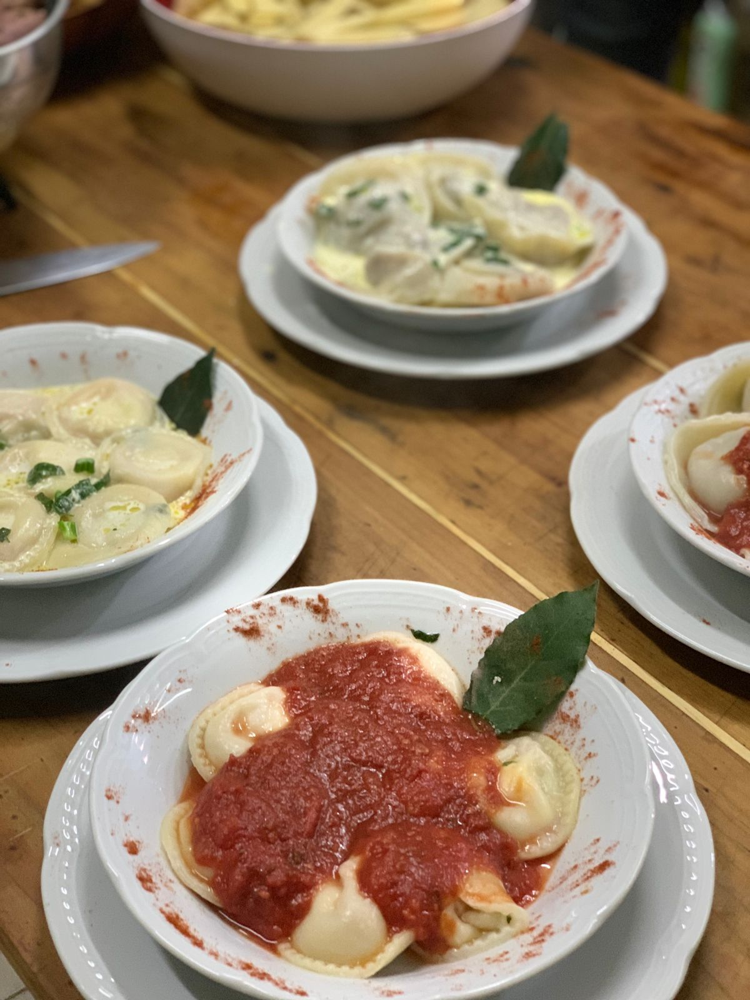
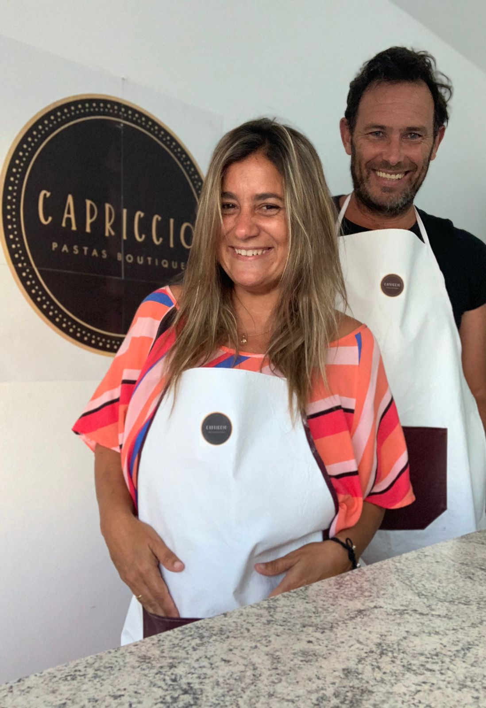

Capriccio Pastas Boutique
Cómo empezó todo
Animarse a destapar una olla y dejar que emerjan los sueños. Ese es el punto de partida de Capriccio Di Antonia Pastas Boutique, un libro de recetas donde se ha amasado cada detalle para que nuestras pastas sean únicas e irrepetibles.
Todo comenzó con la pasión de nuestro chef quien, cansado de comer siempre las tradicionales pastas, decidió ir un poquito mas allá en calidad y originalidad. Así, lo vemos crecer y asumir desafios.
Por mas que distintas experiencias lo fueran amasando por afuera, solo dentro de esa olla se terminaría de cocinar el chef que vivía en él.
Nada sale de la olla en el mismo estado en el que ingresa. La pasta necesita su gole de cocción para que disfrutemos de todo su potencial. Las personas probablemente, también.
En Capriccio Di Antonia Pastas Boutique se cocina con todos los sentidos, porque asi lo hacían nuestros abuelos, nosotros solo le agregamos la excelencia y nuevas tendencias culinarias.
Esperemos que lo disfruten.
Laura y Marcelo
Manos a la obra
Lo primero antes de arrancar, es asegurarnos que todo este limpio, tanto el local como los instrumentos; y por supuesto, los cocineros.
Por lo general siempre contamos con mercadería suficiente para cocinar por varios días. De todas formas las compras de alimentos nos llegan los Martes y Viernes, así nunca dejamos al cliente sin sus platos favoritos.
Contamos con un chef y 2 ayudantes de cocina que empiezan a amasar desde temprano para tener la pasta fresca y cerca del mediodia ya tener la pasta terminada para entregarla al cliente.
Tomamos los pedidos para luego entregarlos antes de preparar todo para la noche.
Luego de terminar de hacer las entregas, llega la hora de volver a preparar los platos para la noche, donde la mayoría de nuestros clientes hacen pedidos grande. Y donde muchos se acercan al local para comer en familia.
 Llega la hora de dejar todo limpio y cerrar el local hasta el siguiente dia, donde somos felices brindando a nuestros clientes una caricia al paladar y hacerlos sentir que comen algo único. Así de felices nos deja hacer esto día tras día.
